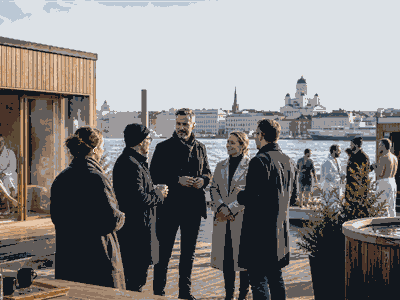

Wellness / Sauna
Nordic Sauna Summit
Regional summit idea for public sauna operators, designers and bathing-culture communities.

More sauna eventsBack to SaunaSee the full sauna topic list.
Why follow itHeat culture is becoming travel culture
Nordic Sauna Summit connects sauna ritual with hospitality, design, recovery, cold water and community bathing.
FormatProgramme plus bathing sessions
Expect a mix of talks, sauna sessions, demonstrations, networking or local bathing routes depending on the event.
Recent editions
| Year | Host / place | Country |
|---|---|---|
| 2026 | Helsinki / Tallinn | |
| 2025 | Archive TBC | |
| 2024 | Archive TBC | |
| 2023 | Archive TBC | |
| 2022 | Archive TBC | |
| 2021 | Archive TBC |
Planning noteEdition details are TBC; use this as a planning placeholder.
Where official 2026 data is not yet published, this page keeps the event useful but labels details as TBC.
Notable moments
- Host context:
 Finland.
Finland. - Core visitor value: sauna sessions, local etiquette and bathing culture.
- Best checked close to event: tickets, towels, nudity/textile rules and public transport.